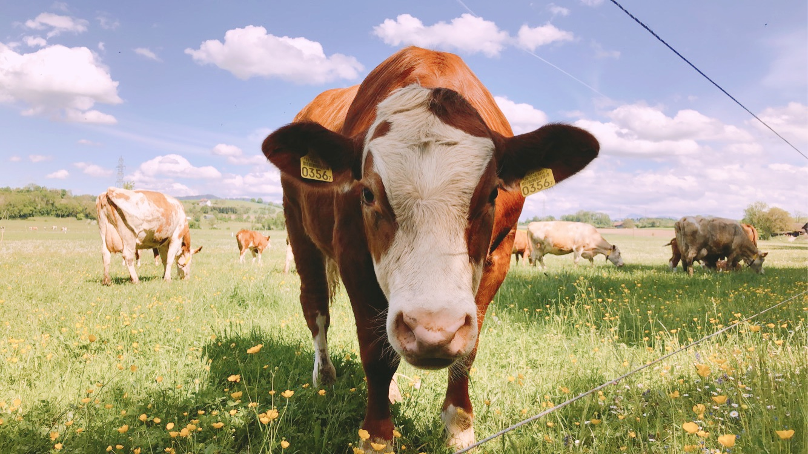
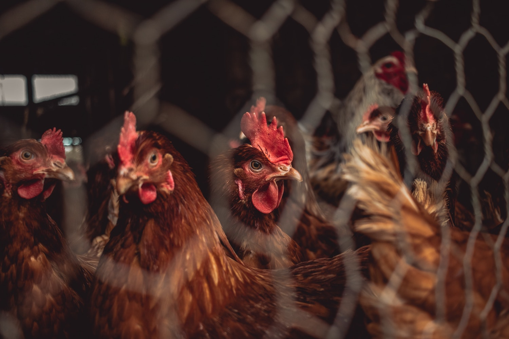

Food is a right and necessity for all living organisms. However, with
the projected exponential population growth of humans and a somewhat
‘unpredictable’ changing climate, our world is facing food insecurity.
New, innovative strategies are needed to increase food production,
whilst hindering the further exacerbation of climate change. Food
production must increase by at least 70% in order to meet the global
food demand in 2050—which is when the global population is projected
to hit nine billion people. However, with the current climate crisis,
the depletion of environmental resources and biodiversity loss,
achieving such a task is no easy feat.

Humans are consuming too much meat for the environment to handle. | The Kingfisher
One of the major concerns frequently discussed today is our substantial
consumption of meat; according to an FAO Report (2019), around 80
billion livestock are slaughtered every year to meet the demand for
meat products.
Livestock is a primary contributor of greenhouse gas (GHG)
emissions, the major drivers of climate change, due to their
ruminant guts and their nitrous oxide-filled manure. Today,
approximately 14.5% of the entire anthropogenic GHG emissions is
caused by livestock, of which 65% is from cattle (FAO 2019).
As the year goes by, global meat demand continues to surge, as
previously lower income countries become richer and more urbanized.
The expansion of these markets will further implicate an increase in
land-use change, freshwater usage, GHG emissions and biodiversity loss.
To hinder this, wealthier countries, who have the luxury of choice in
their diets, have strongly encouraged their citizens to shift towards
plant-based diets—the abstinence from all animal products. The aim is
to relieve pressure on livestock production, both meat and dairy,
by decreasing demand.
‘80 billion livestock are slaughtered every year to meet the demand for meat products.’
So, should we all go plant-based? In theory, this would be a ‘quick
fix’ solution to decreasing the impact of GHG emissions on the global
environment immensely and decelerating global warming.
Although, this is unrealistic and not a ‘one-size-fits-all’ solution.
In many regions of the world meat is a crucial part of the culture,
religion, and income. For instance, livestock contributes about 19%,
13% and 8% GDP in Ethiopia, Kenya and Uganda, respectively.
One must also keep in mind that it is the diets of urbanized areas
which contribute the most to climate change, as their demands are
supplied via factory and battery farms. These high density, intensive
agricultural practices have little regard for animal wellbeing and the
environment, prioritizing maximizing their profits instead. It is not
the subsistence, smallholder farmers of rural and indigenous
communities, who contribute to GHG emissions.
‘It is the diets of urbanized areas which contribute the most to climate change.’
Cultured meat would drastically decrease the amount of livestock
held in inhuman factory and battery farm conditions. | Farm Watch / Flickr
Eat Just, Inc. : A lab-based approach to meeting the meat demand
We may not be far from a future where meat is consumed without
slaughtering any live animals nor our finite resources unsustainably
exploited. For the first time in the world, the Singapore Food Agency
approved lab-grown chicken (also known as in vitro, artificial meat)
produced by Californian start-up Eat Just, branded as GOOD Meat.
The founder and CEO of Eat Just, Josh Tetrick, started his company
with the aim to ‘take live animals out of the equation of the food
system’. Their featured product ‘Just Egg’ launched in 2018, which
has been lab-grown to mimic chicken eggs. The company has been able
to sell an equivalent of more than 100 million chicken eggs to firms
such as Walmart and Alibaba.
This cultured chicken is not plant-based, as its contents are
technically still made from animals. Eat Just’s poultry meat
and egg products are cultured from a single stem cell—a non-specialised
cell which can be programmed to grow into any part of the body—obtained
from a cell bank, through a biopsy or the root of a feather.
The cell is then fed with all the essential nutrients and hormones,
as a chicken normally would. Depending on the manufacturer’s choice,
stem cells can then either transform into muscle cells or fat cells.
‘For the first time in the world, the Singapore Food Agency approved
lab-grown chicken.’
With this technique, one could grow the desired part of chicken,
whilst eliminating the need to produce, keep and slaughter live
chicken in battery farms. It takes around two weeks to obtain full
grown meat and the process is relatively easy compared to its
regulatory approval to be allowed onto the market.
So, where can you have your bite of the lab-grown chicken? Currently,
only one restaurant in Singapore, 1880 is serving GOOD Meat chicken
nuggets for about $17. However, there is expected to be a wider
adoption of cultured chicken in the city over the coming months to
years. Furthermore, it is possible to purchase such chicken on the
GOOD Meat website.
This breakthrough of approving lab-based meat has not only shaken the
world of animal agriculture, but is revolutionizing it. Although
poultry production represents only the minority of the total livestock
GHG emission (8%), if cultured beef and pork meat are also approved,
it would significantly contribute to the climate crisis mitigation,
whilst meeting the global meat demand.
‘The approval of lab-based meat will revolutionize
the world of animal agriculture.’

Scientists can mimic the growth conditions in the lab in order to
grow chicken meat and eggs from a single stem cell. Only a few
chickens, or livestock in general, would be needed as a stem cell
bank — a tiny proportion of the livestock we rear today. | Nighthawk
Shoots / Unsplash
What are the other benefits? Wider adoption of cultured meat means
that some animal welfare issues can be overcome, and biodiversity can
be maintained by sparing the land used for feed crops and livestock
rearing. Moreover, cultured meat could substitute plant-based meat
products which often fail to satisfy consumers on their texture,
consistency and taste.
But, how would the world respond to this novel method of producing
meat? Oftentimes, humans tend to dislike ‘unnatural’ products, which
may influence the acceptance of lab-grown meat.
Furthermore, despite some of the ethical issues of livestock farming
being tackled, certain cellular agriculture still requires a much
smaller extent of animal rearing to extract muscle cell samples—regardless
of the little to no pain caused. As a result, some may still choose to
be vegetarian or vegan.
Is cultured meat safe?
Advocates of cultured meat argue that it is safer than the current
meat sold in supermarkets, as it is grown under a controlled environment
without any external contacts. Thus, in vitro meat has
extremely low or no risk of bacterial contamination such as E.coli,
Salmonella or Campylobacter, compared to conventional, highly dense
livestock during slaughter. This technology would also decrease the
pressure on antibiotic-resistance development.
On the other hand, there is a lot of uncertainty in potential
consequences of cultured meat due to its recent development. Some may
argue that human metabolism could severely be affected if cultured
meat containing deregulated cell lines are consumed. But, it is perhaps
not so much of a concern, as this would be relatively easy to spot and
removed from production.
In terms of the environment, the carbon footprint from cultured meat
may not be as better than conventional livestock farming over the
long term as initially thought. A study reported that despite methane
from live animals being one of the most potent GHGs, it does not
accumulate in the atmosphere like CO2 does.
Therefore, if one replaces livestock entirely with cultured meat,
CO2 from the production would gradually accumulate and
remain, warming the temperature. Thus, the advantage of in vitro
meat over conventional animal agriculture is not always clear.
‘In vitro meat has extremely low or no risk of bacterial contamination.’
Other limiting factors are cost and scale of its production. Currently,
it costs $4 to produce 110 grams of cultured chicken, compared to the
$1.14 per Kg in conventional chicken farms. However, CEO from Future
Meat Technologies, Rom Kshuk predicts that the price would be cut back
under $2 over the next year or so.
Eat Just CEO Tetrick is also confident that cultured chicken production
cost and scale would significantly improve over time. But, it would
take several years or more for this high-priced product to become
accessible to all.
We must also consider the consequences of cellular agriculture on
conventional farmers, religion and culture. If livestock agriculture
is eliminated, a loss of agricultural jobs and livelihood is
inevitable—with those in poorer countries having a difficult time to
find alternative work.
Another interesting question is whether lab-grown meat would be
considered as Kosher (Jewish dietary law) or Halal
(Islamic dietary law)? Some argue that regardless of the source of
meat cells used, the original identity would be lost.
Singapore food markets offering Asian food, a cuisine heavy in meat
dishes, serving cultured meat could soon be the norm! | Lily Banse /
Unsplash
So where is the world heading?
The approval of sustainable lab-grown chicken by Singapore has
undeniably become a turning point of our broken food systems, and a
big step towards achieving food security. However, it is believed that
it will take several years for the US and Europe to approve cellular
agriculture for market sale, due to strict regulatory legislations and
public attitudes.
But Tetrick is confident, ‘You have to take leaps of faith every day,
right? We’re acting as if the U.S. will eventually approve it. We’re
acting as if Europe will eventually approve it.’
Featured Image: Annie Spratt | Unsplash
Chriki S. and Hocquette J.F. (2020) The myth of cultured meat: A review. Frontiers in Nutrition. Volume 7, article 9.